How to use AssetMost
Everything below uses the built-in demo company, Plutonic Games, so the screens match what you'll see after seeding a fresh install. Fifteen minutes here covers the whole app.
Getting started
AssetMost is self-hosted. Once your instance is running, browse to it and sign in with your email and password. Signing in lands you on People — the screen you'll live in.
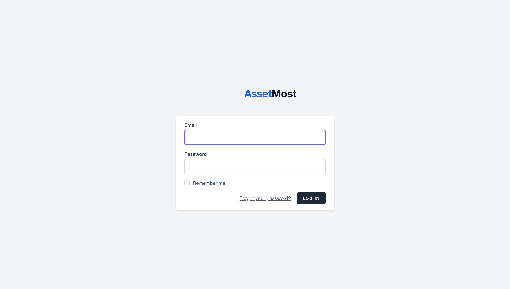
The workspace
Four destinations in the top bar: People, Assets, Tasks (with a live count of open work), and Docs. To their right:
- Company switcher — scope every list to one company, or "All companies"
- Theme toggle — light or dark, one click
- Gear — Settings
- Your avatar — profile and log out
Most screens share one layout: a list on the left (search box, filters, sortable column headers), a detail pane on the right, and one + Add button. Click a column header to sort by it. The footer shows how many records you're seeing and the selected record's ID and dates.
People
The People screen has four tabs: Staff, Accounts, Vendors, and Onboarding. Staff is the directory: every person, their title and department, and — once you select someone — their contact details with three tabs of connections: Logins, Licenses, and Devices.
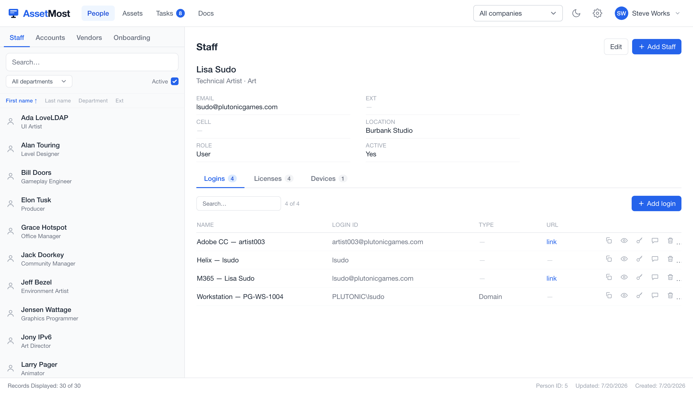
Find someone
- Type in the search box, or filter by department with the dropdown.
- The Active toggle hides departed staff; untick it to see everyone.
- Click a column header (First name, Last name, Department, Ext) to sort.
Add a person
- Click + Add Staff.
- Fill in name, email, title, department, and contact details. Pick the company they belong to.
- Role and can sign in to AssetMost control whether this person can also log into the app itself — most staff can't, and that's fine: they're records, not users.
- Save. Use Edit on any profile to change it later.
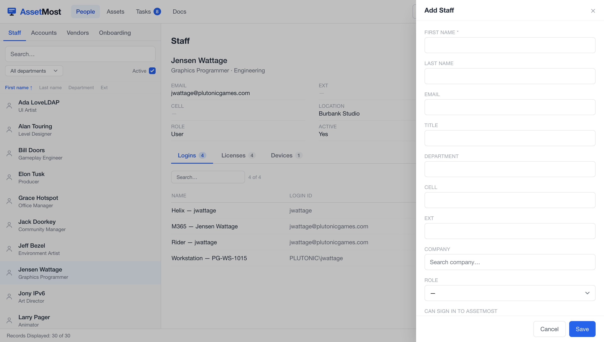
Logins
A login is an identity credential that belongs to a specific person — their M365 sign-in, their domain account, their seat in a tool. It lives on the person, which is what makes offboarding a checklist instead of an archaeology dig.
- Open a person and stay on the Logins tab.
- Click + Add login; each row records the service, the login ID, its type (e.g. Domain), and an optional URL.
- Use the row icons to copy the credential, reveal it, edit, comment, or delete it.
What is a credential for?
Every login answers that question exactly one way: it points at a device (the admin account on PG-SR-1031), at a product (a seat in Creative Cloud), at a vendor (the domain-registrar account, no seats involved), or at nothing, which is what a person's own directory identity looks like (PLUTONIC\jsudo). Keeping that answer in a real column is what makes everything countable later. The alternative is what old inventories do: invent fake vendors named "Servers" and "Wifi" to hold credentials that never had a home.
Licenses
The Licenses tab on a person shows the seats they hold: the product, the vendor, what the seat costs, and when it renews. Filter by product, search, or click + Add license to grant a seat.
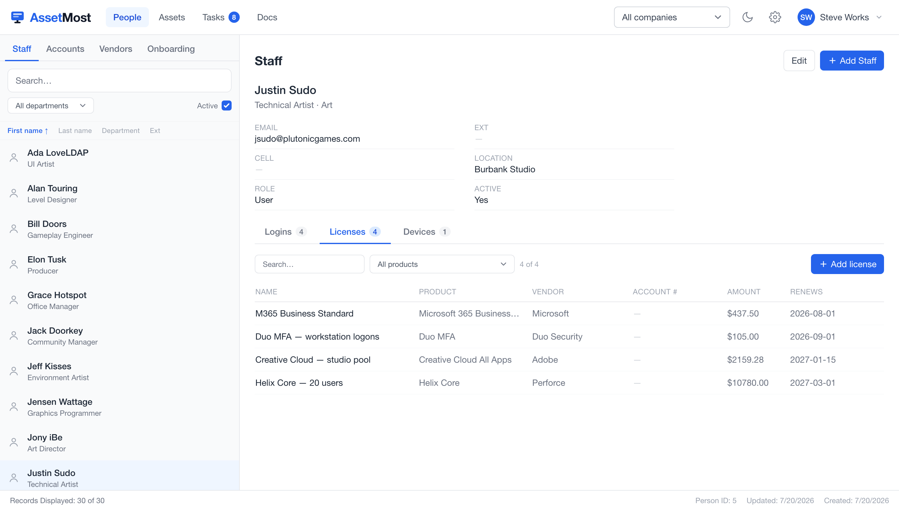
Vendor, product, license, seat
Licensing flows one direction. The vendor is who you buy from (Adobe). The product is what it is (Creative Cloud). The license is what you bought (25 seats, renews in January). A seat is an account consuming one. Available is arithmetic: seats bought minus seats consumed. One account can hold seats on several licenses, and a pooled account like artist003 consumes exactly one seat no matter who holds it this month.
Products stay separate from licenses on purpose: "Creative Cloud" is a catalog fact, "25 seats renewing in January" is your purchase. Two companies buying the same product are two licenses, one product.
The account registry
People → Accounts is the registry of credentials that don't belong to one person: pooled logins like artist001, shared mailboxes, service accounts, break-glass admin credentials. These float — they get assigned to whoever needs them now, and handed to someone else later.
Because it maps privileged credentials across your realm, the registry stays locked until you re-enter your password, even though you're already signed in.
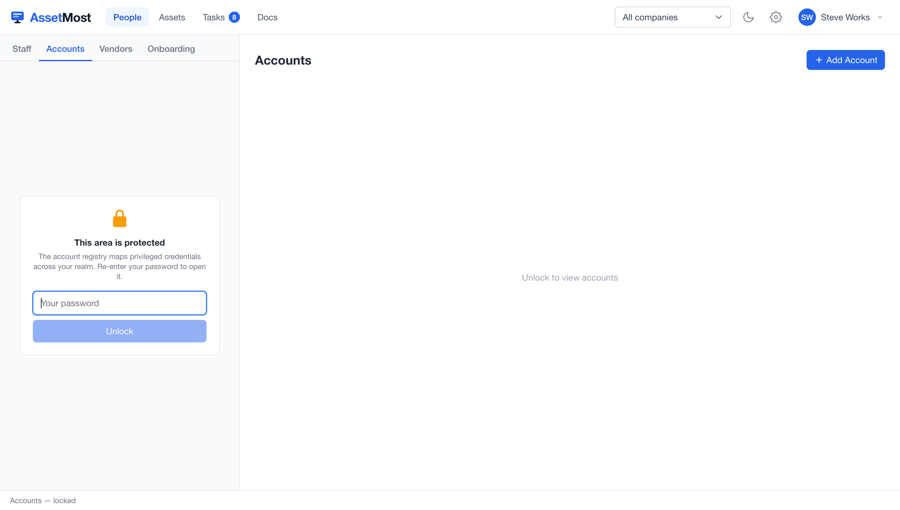
- Open People → Accounts and unlock with your password.
- Click + Add Account to register a shared or service credential.
- Assign it to the person currently holding it; reassign when it changes hands.
Personal, pooled, shared
Every account carries a sharing mode. Personal belongs to one person. Pooled is a floating seat like artist003: one holder at a time, and reassigning it is a swap, not a rename. Shared is genuinely plural: a support mailbox with ten people attached is correct, not a mess to clean up.
The modes make compliance checkable instead of tribal. A license-consuming seat with more than one holder is a violation; a shared mailbox with ten is fine. AssetMost can tell the difference because the difference lives in a column.
A user need not be a human
The identity that registered your domains, your Apple ID, and thirty other vendor accounts is real even though it isn't a person. Give it its own person record (say, itops@plutonicgames.com) and let it hold those logins. The vendor-side account strings stay exactly what they are: you can't rename an Apple ID, and you don't need to.
Vendors
People → Vendors lists the companies you buy from — Adobe, Microsoft, JetBrains, Perforce. A vendor collects its products, the logins on your side of that relationship, and the licenses bought from them, so "everything we have with JetBrains" is one click.
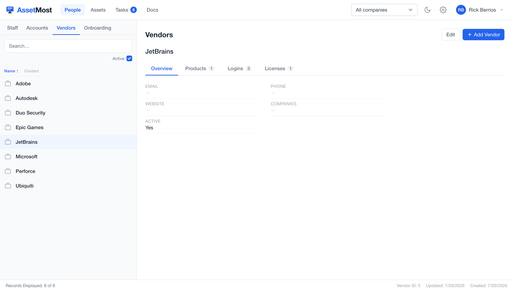
Onboarding with SOPs
This is the part that makes the rest of the app fill itself in. An SOP in AssetMost is an executable document: it has a Run tab (a form) and an SOP tab (the script behind it). Running "Employee onboarding" does the data entry for you.
- Go to People → Onboarding (or open the SOP in Docs) and pick a workflow — employee onboarding, freelancer onboarding, offboarding.
- On the Run tab, enter the new hire: name, email, username for Domain/AD, title, department, start date.
- Pick vendor accounts to create — each one becomes a registry credential and a task for whoever sets it up.
- Assign floating accounts — pooled seats and shared mailboxes they'll use.
- Click Run onboarding. The person, their credentials, and the work all appear at once.
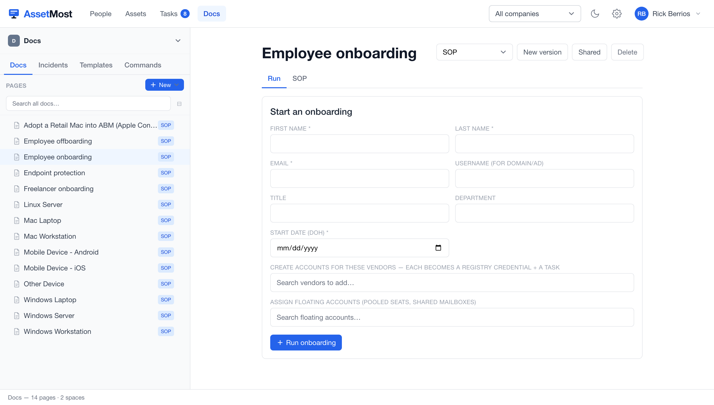
Editing the SOP itself
The script behind the form is steps with Why, How, and Done when — so the reasoning survives the person who wrote it. Type / for commands while editing (/help lists them); steps, tasks, and the script compile from what you write. Reorder, indent, or nest steps with the controls on each row, and use New version when the process changes.
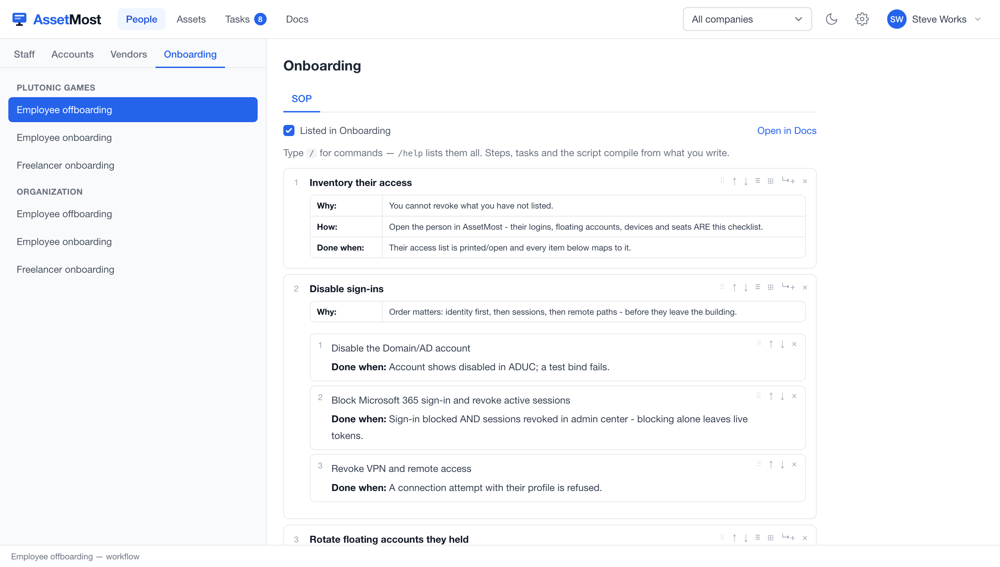
Assets & locations
The Assets screen tracks hardware: Devices, Locations, and its own Onboarding tab for machine intake. Every device carries an asset tag (like PG-LT-1007 — prefix from the company, so the sticker means something), its model, and an Overview of location, room, IPs, serial, service tag, OS, CPU, and RAM. The Assigned Users tab shows who has it.
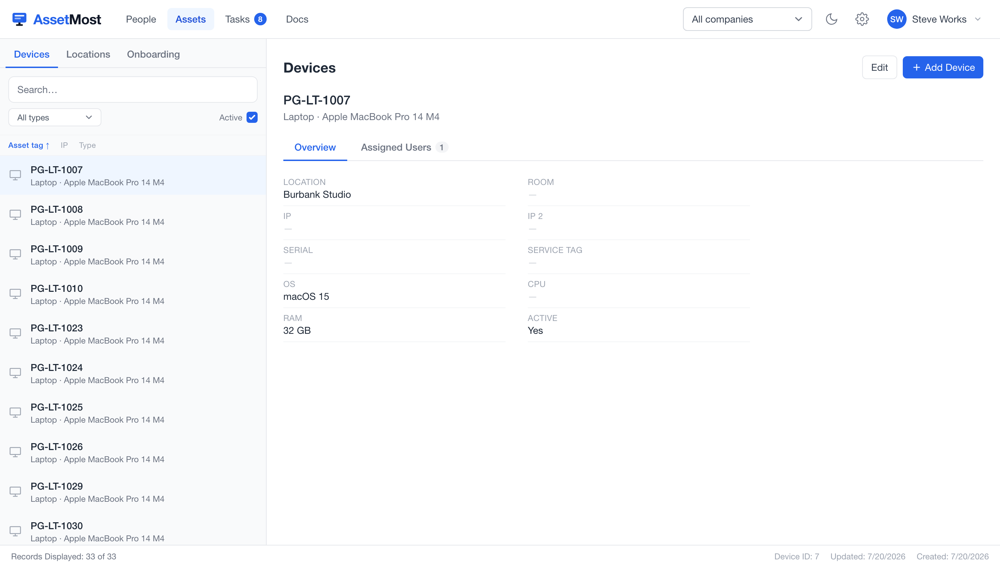
- Filter the list by device type or search by tag; sort by the column headers.
- Click + Add Device to intake hardware; Edit to update specs or move it.
- Under Locations, each site lists its rooms — assign devices to a room so "what's in 104B?" has an answer.
How asset tags work
PG-LT-1007 reads: company prefix, type code, number. The tag doubles as the hostname wherever the machine has one, so the sticker and the network agree. Numbers come from one per-company counter that starts at 1001 and never reuses a number: a sticker on a shelf can never collide with a new machine. Gaps are normal and meaningless.
And nothing parses the tag. Type and company are real columns, so counting is exact ("workstations in service" is a filter, not a sticker hunt) and reclassifying a machine breaks nothing. Device types themselves are a short fixed list with the two-letter codes you see in tags: Workstation, Laptop, Server, Storage, Network, Printer, Phone, Tablet, Monitor, Peripheral, Infrastructure, Game Console. Not free text, which is how an inventory ends up with thirteen spellings of "hard drive."
Rooms make audits real
Give every device a room and the audit stops being memory: open the room's device list, read the stickers, match. Two answers fall out for free: on the list but not in the room (missing), and in the room but not on the list (unrecorded).
Tasks
Tasks is a weekly rolling sheet, not a backlog. The week you're looking at is the week that matters; anything unfinished from an earlier week rolls into the current one automatically, marked as carried over.
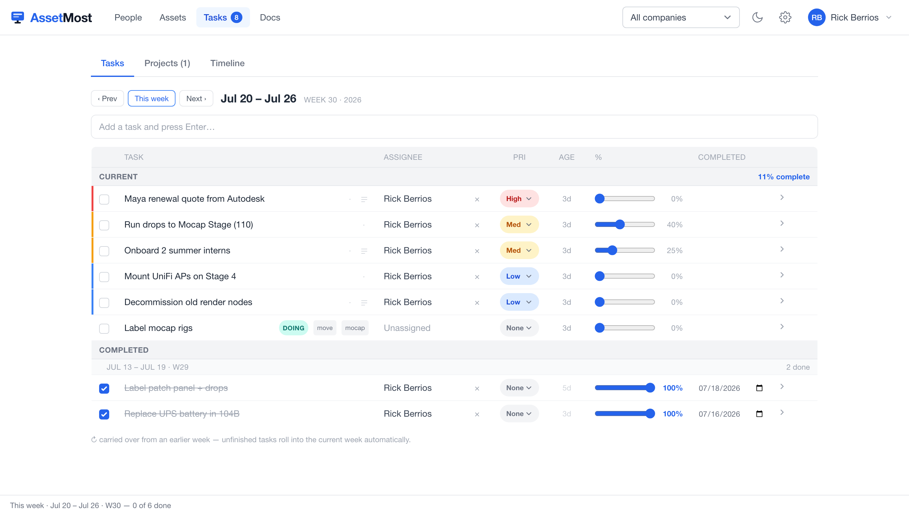
- Type in the box at the top and press Enter — that's the whole add flow.
- Set priority (High / Med / Low), assign a person, drag the % slider as work progresses.
- Tick the checkbox when done — it moves into that week's Completed section with the date.
- Use ‹ Prev / This week / Next › to move between weeks, and the Projects and Timeline tabs when work outgrows a single week.
Docs
Docs is the knowledge base: pages organized into spaces, with tabs for Incidents, Templates, and Commands alongside the docs themselves. Pages tagged SOP are the executable kind you met in Onboarding — the library ships with runbooks like Mac Laptop, Windows Server, Employee offboarding, and Endpoint protection.
- Search all docs from the box, or browse the page tree.
- Click + New to write a page; tag it as an SOP if it should be runnable.
- Keep one doc per procedure — a solved problem becomes a runbook, and next year it's a search away.
Companies & settings
AssetMost is multi-company: assets, people, and licenses all hang off a company, and the switcher in the header scopes every screen to one of them. Settings (the gear) is where companies are defined — name, tag prefix (the PG in PG-LT-1007), domain, and location — alongside Identity & integrations, Email & signatures, Backups, Roles & access, and Organization.
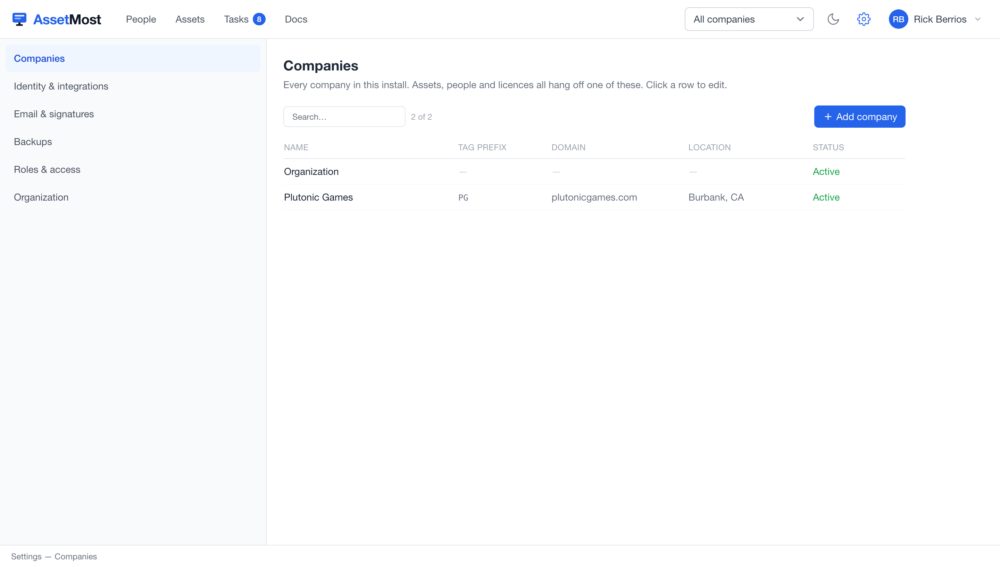